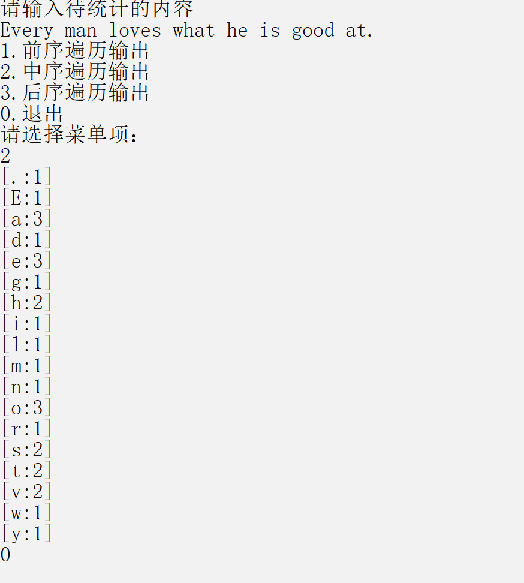

看代码啦
#include<cstdio>
#include<iostream>
#include<cstdlib>
#include<cstring>
#include<queue>
using namespace std;
typedef struct Zl//二叉查找表的结点
{
char data;//结点的值
int count;//结点出现的次数
Zl *lchild,*rchild;//左右孩子
}Zl;
bool Search(Zl *T,char key,Zl *f,Zl* &p)//查找操作
{
if(T==NULL)//此时找不到
{
p=f;//记住最后访问的结点
return false;
}
else if(T->data==key)//找到了
{
p=T;//记录找到的结点
return true;
}
else if(T->data>key)//如果目标值小于当前值则到左子树进行查找
{
return Search(T->lchild,key,T,p);
}
else//大于则到右子树进行查找
{
return Search(T->rchild,key,T,p);
}
}
bool Insert(Zl* &T,char elem)//插入操作，也是建立二叉查找树的操作
{
Zl *p,*f;//p用来记住要找的结点，f指向当前节点的双亲结点
p=NULL;
f=NULL;
if(Search(T,elem,f,p)==true)//找到了
{
p->count++;//个数加一
return false;
}
else//没找到则插入
{
Zl *temp;
temp=new Zl;
temp->data=elem;
temp->lchild=temp->rchild=NULL;
temp->count=1;
if(!p) T=temp;//数为空时直接将值赋给根节点
else if(elem<p->data)//小于时则插入到左子树
{
p->lchild=temp;
}
else//大于时则插入到右子树
{
p->rchild=temp;
}
return true;
}
}
bool Delete(Zl* &p)//删除p指针指向的结点
{
Zl* q;
if(p->lchild==NULL&&p->rchild==NULL)//既没有左子树也没有右子树时
{
q=p;
p=NULL;
free(q);
}
else if(p->lchild==NULL)//只有右子树时
{
q=p;
p=p->rchild;//直接将p结点的右子树接到p结点的位置
free(q);
}
else if(p->rchild==NULL)//只有左子树时
{
q=p;
p=p->lchild;//直接将p结点的左子树接到p结点的位置
free(q);
}
else//既有左子树也有右子树时
{
q=p;
Zl *temp;
temp=p->lchild;
while(temp->rchild)//找到左子树中最右的结点，即中序遍历序列中上一个访问的结点
{
q=temp;
temp=temp->rchild;
}
p->data=temp->data;//将根节点置为找到的结点，然后删除找到的结点，该节点一定没有右子树
if(p!=q)
q->rchild=temp->lchild;//将删除结点的左子树接到他的双亲结点的右子树上
else//p=q时，说明p的左子树无右孩子，直接接上即可
p->lchild=temp->lchild;
free(temp);
}
return true;
}
bool DeleteBST(Zl* &T,char key)//删除树中所有等于key的结点
{
if(!T) return false;
else
{
if(T->data==key) return Delete(T);
else if(T->data>key) return DeleteBST(T->lchild,key);
else return DeleteBST(T->rchild,key);
}
}
void MidOrderTraverse(Zl *p)//中序遍历输出
{
if(p!=NULL)
{
MidOrderTraverse(p->lchild);
cout<<'['<<p->data<<':'<<p->count<<']'<<endl;
MidOrderTraverse(p->rchild);
}
}
void XainOrderTraverse(Zl *p)//先序遍历输出
{
if(p!=NULL)
{
cout<<'['<<p->data<<':'<<p->count<<']'<<endl;
MidOrderTraverse(p->lchild);
MidOrderTraverse(p->rchild);
}
}
void HouOrderTraverse(Zl *p)//后序遍历输出
{
if(p!=NULL)
{
MidOrderTraverse(p->lchild);
MidOrderTraverse(p->rchild);
cout<<'['<<p->data<<':'<<p->count<<']'<<endl;
}
}
void Clean(Zl *first)//释放二叉查找树
{
if(first!=NULL)
{
free(first);
Clean(first->lchild);
Clean(first->rchild);
}
}
int main()
{
Zl *T;
T=NULL;
char s[100];
cout<<"请输入待统计的内容"<<endl;
gets(s);//用gets接收来接收空格
for(int i=0;i<strlen(s);i++)
{
Insert(T,s[i]);
}
DeleteBST(T,' ');
cout<<"1.前序遍历输出"<<endl;
cout<<"2.中序遍历输出"<<endl;
cout<<"3.后序遍历输出"<<endl;
cout<<"0.退出"<<endl;
cout<<"请选择菜单项："<<endl;
int a;
while(1)
{
cin>>a;
if(a==1)
XainOrderTraverse(T);
else if(a==2)
MidOrderTraverse(T);
else if(a==3)
HouOrderTraverse(T);
else
break;
}
Clean(T);
return 0;
}
测试数据：
Every man loves what he is good at.
运行结果:

我的个人博客 amazingz6.github.io
我的bilibili https://space.bilibili.com/66908429
我的CSDN https://blog.csdn.net/qq_44105654
我的简书 https://www.jianshu.com/u/607ef08e5825
我的github https://github.com/AmazingZ6?tab=repositories